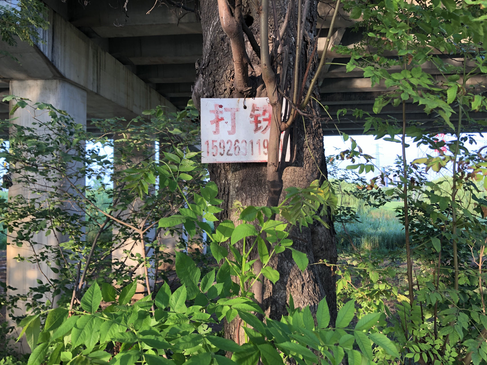
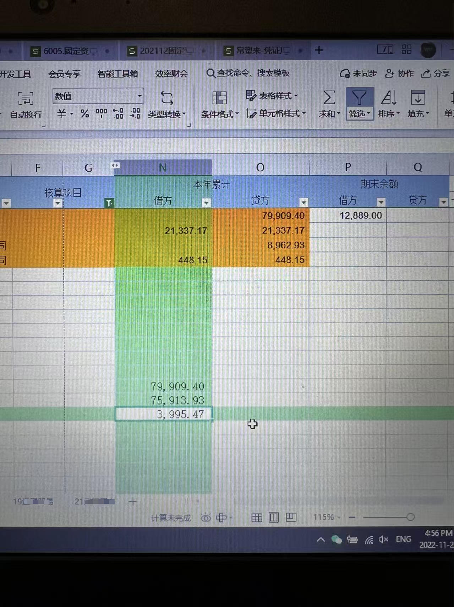
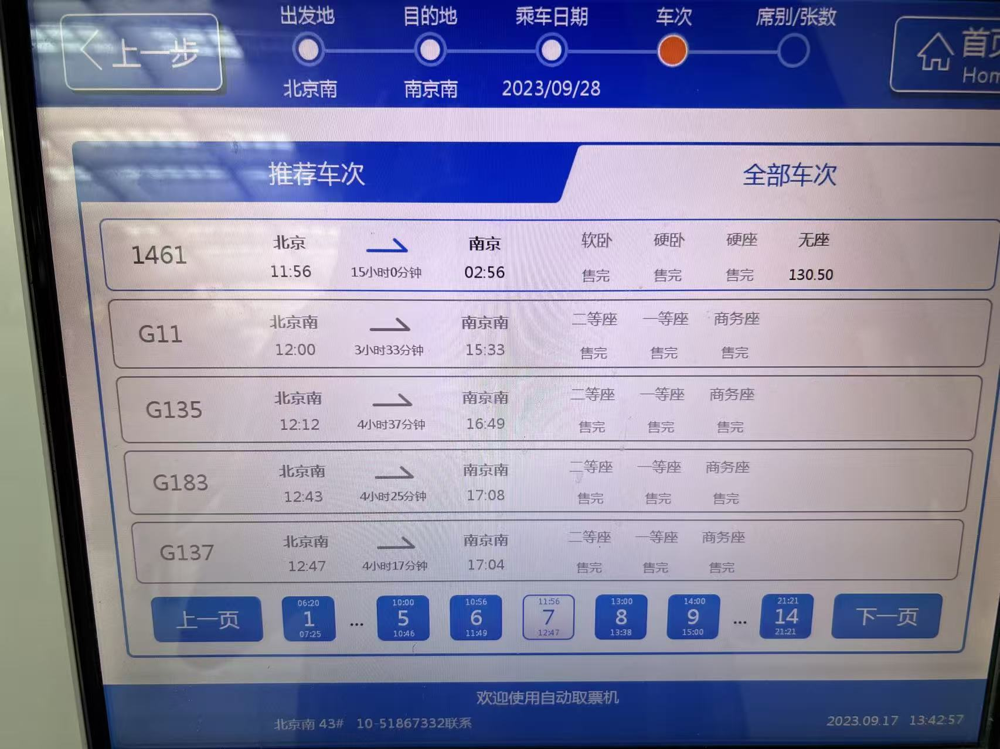
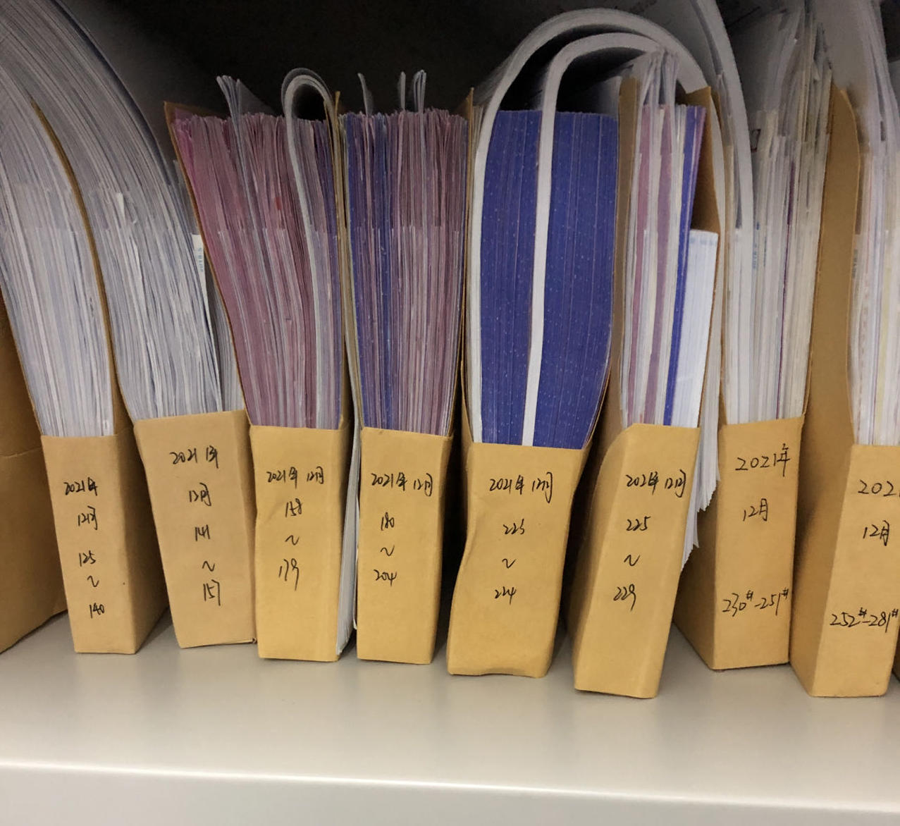
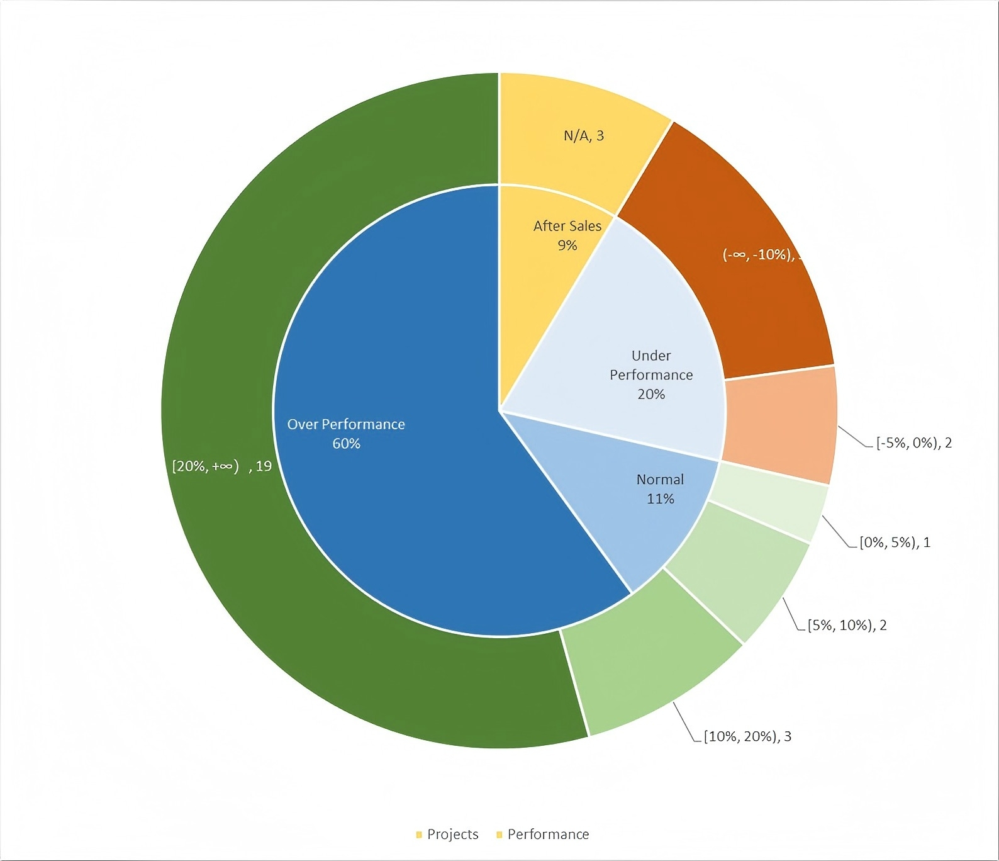

My Blog - Pz H
项目经验
联系方式
他的工作经历
个人简介
你的浏览器不支持读取自我介绍内容。
工作经验
2022.7 - 2023.12: 审计专员 - 会计师事务所
2022年7月
H股上市公司季报审阅

2022年10月
A股上市公司预审

2022年12月
A股上市公司年审
2023年7月
ipo审计项目

2024.3 - 2024.11: 全盘账会计 - 跨境电商企业
2024年3月
从乙方到甲方

2024.12 - 2025.3: 海外财务 - 金融科技公司
2024年12月
在金融领域拓展
2025.6 - 2025.9: 成本分析员 - 机械设备制造企业
2025年6月
专注数据分析

技能
财务：中国会计准则(CAS), 国际会计准则(IFRS), ACCA(10/13), 初级职称
软件：Excel, 用友, 金蝶, 各类ERP(i.e. Odoo)
编程：数据库, Python(数据可视化), VBA, JS